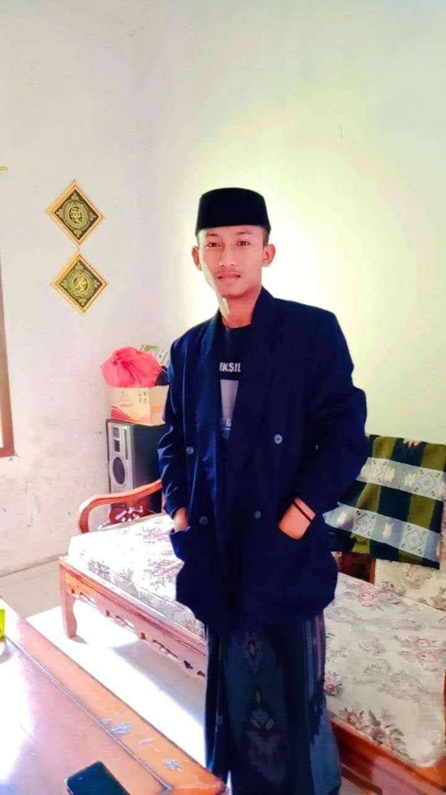

Tentang Saya

nama lengkap nazaruddinnajib. berasal dari Kabupaten gresik, Jawa Timur. saya MA miftahul ulum kareteng. dan melanjutkan pendidikan ke Universitas Pesantren Tinggi Darul Ulum Jombang.
Saya melanjutkan pendidikan ke perguruan tinggi untuk menambah ilmu pengetahuan, memperluas wawasan, dan mengembangkan kemampuan diri. Saya berharap dapat menjadi mahasiswa yang disiplin, bertanggung jawab, serta mampu meraih cita-cita di masa depan.
Keahlian
Olahraga (Futsal dan Renang)
Saya sangat menyukai kegiatan olahraga, terutama bermain futsal dan berenang. Bagi saya, olahraga bukan hanya sekadar aktivitas fisik, tetapi juga menjadi cara untuk menjaga kesehatan dan kebugaran tubuh. Bermain futsal mengajarkan saya tentang kerja sama tim, kekompakan, dan sportivitas, sedangkan berenang membantu meningkatkan stamina serta melatih kekuatan tubuh. Melalui kedua olahraga tersebut, saya belajar tentang kedisiplinan, semangat, dan pentingnya menjaga kesehatan.
Mengaji (Al-Qur'an dan Membaca Kitab)
Saya juga senang mengisi waktu dengan kegiatan mengaji, seperti membaca Al-Qur'an dan mempelajari kitab. Bagi saya, mengaji bukan hanya sekadar kegiatan keagamaan, tetapi juga merupakan cara untuk mendekatkan diri kepada Allah SWT serta memperdalam ilmu agama. Dengan rutin membaca Al-Qur'an dan kitab, saya dapat menambah pengetahuan, meningkatkan keimanan, serta belajar memahami nilai-nilai kehidupan. Kegiatan ini juga mengajarkan saya tentang kesabaran, ketekunan, dan pentingnya mengamalkan ilmu dalam kehidupan sehari-hari.
Bermain Game (PUBG)
Saya sangat menyukai bermain game, terutama PUBG (PlayerUnknown's Battlegrounds). Bagi saya, bermain game bukan hanya sekadar hiburan untuk mengisi waktu luang, tetapi juga menjadi kegiatan yang dapat melatih konsentrasi, strategi, dan kemampuan mengambil keputusan. Dalam permainan PUBG, saya belajar untuk bekerja sama dengan tim, menyusun strategi, serta menghadapi berbagai tantangan untuk mencapai kemenangan. Selain itu, bermain game juga mengajarkan saya tentang kesabaran, komunikasi, dan sportivitas dalam menerima kemenangan maupun kekalahan.